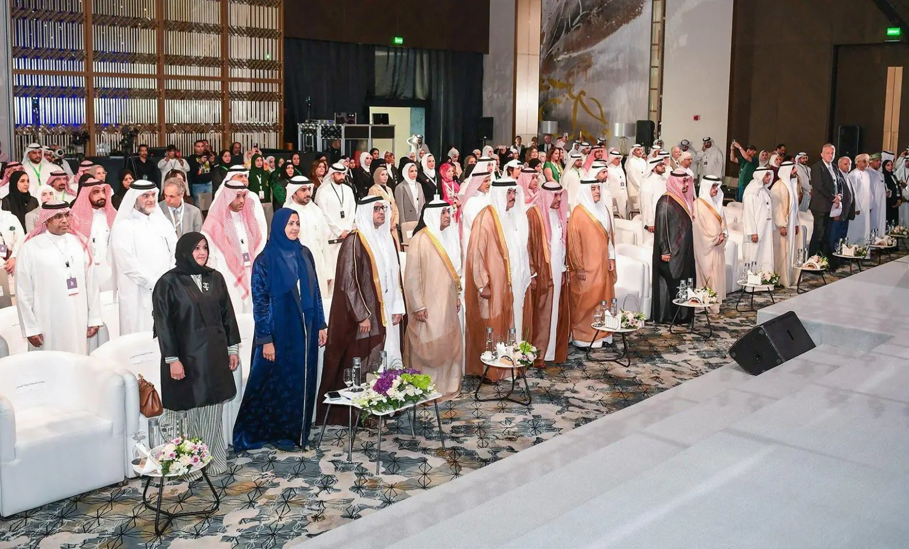

مشغل تربوي · مسقط
دراسات ومجلة محكّمة وتقارير ومعاجم يصدرها المركز منذ أكثر من أربعة عقود، لصنّاع القرار والباحثين والمعلمين في الدول الأعضاء السبع.

من ملتقيات المركز بحضور ممثلي الدول الأعضاءما صدر عن المركز في 2026
جائزة يقدّمها المركز تكريماً للمعلمين المتميزين في الدول الأعضاء. شروط الترشح ودليل التقديم وكل ما يلزم في مكان واحد داخل موقع المركز.